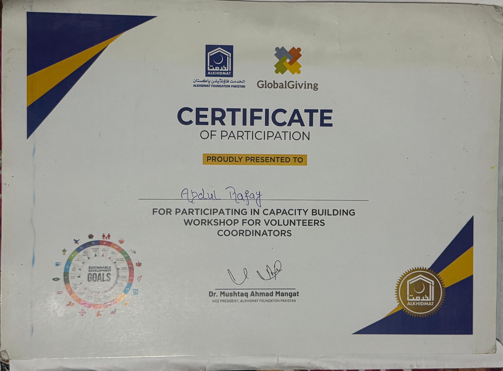

Capacity Building Workshop for Volunteers Coordinators
Alkhidmat Foundation Pakistan & GlobalGiving

Please place your Alkhidmat certificate here:
assets/images/certifications/alkhidmat.jpeg
Overview
Earned a Certificate of Participation for successfully completing the Capacity Building Workshop for Volunteers Coordinators. This highly impactful event was organized by Alkhidmat Foundation Pakistan in partnership with GlobalGiving, targeting individuals dedicated to social welfare and organizational excellence.
What It Demonstrates
This certification validates the ability to coordinate large-scale volunteer efforts, drive community impact, and align grassroots projects with Sustainable Development Goals (SDGs). Such leadership and organizational skills highlight my worth in social services, teamwork, and proactive community problem-solving—traits that strongly complement my professional tech and administrative capabilities.